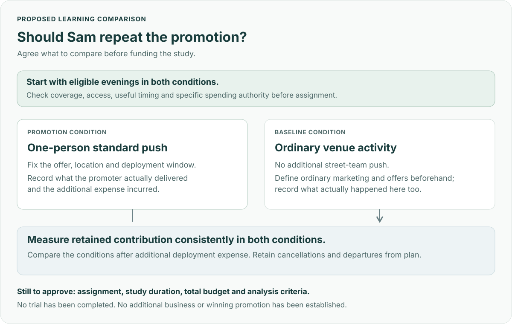

The operating example answers which supplied deployment can run. It does not establish whether outreach causes enough additional business to justify repeating the expense.
What evidence would justify the next $200?
At $40 contribution per genuinely additional guest, five cover the one-person deployment's expense and six first exceed it. A promoter code records an attributed admission, not whether that guest would have attended anyway. The business needs a credible comparison of retained contribution.
A proposed learning brief, not a completed study.
Alex and the owner propose comparing one-person standard outreach with ordinary venue activity on comparable eligible evenings. Keep the offer, location and window defined; record the assigned condition, actual delivery, contribution and extra expense. Fair assignment, study duration, total budget and analysis criteria still require a suitable design.


A cancelled assigned promotion should retain its assignment and cancellation reason. It cannot silently become a baseline evening. The study may be inconclusive, and credited activity alone cannot establish a causal effect.
The current venue workflow calculates operating fit and conditional expense-recovery thresholds. It does not assign conditions, estimate causal effects or identify a winning promotion. The growth example demonstrates implemented information-value calculations under explicit hypothetical probabilities.
Design references and scope
Alex, the venue and financial inputs are fictional; no promotion study has been completed. NIST's randomized-block guidance explains one way to handle nuisance factors. A real study needs a design appropriate to the decision and available evidence.